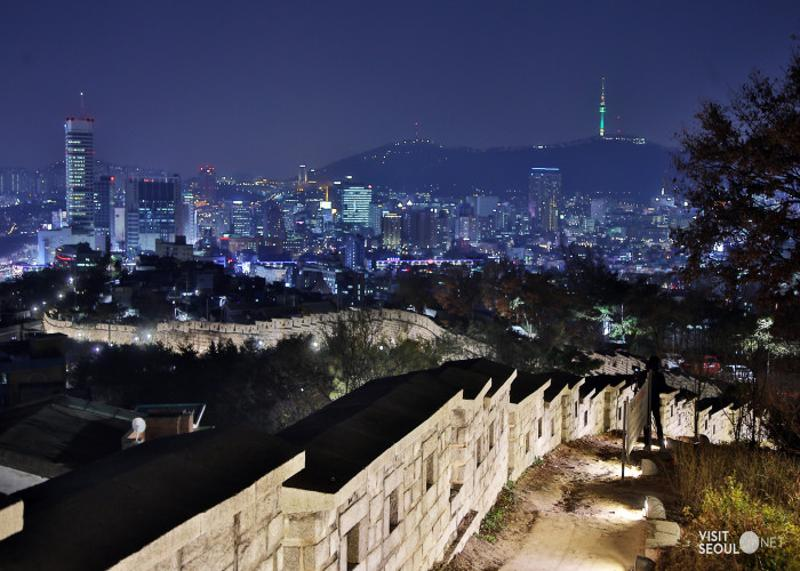

HTML5학습
W3C
W3SCHOOLS
jQuery
나의 소개
이름 : 김수이
별명 : 슝
관심기술 : 빅데이터
취미 : 영화 보기
2019 재미있게 본 영화
제목
장르
엑시트
액션, 코미디
극한직업
코미디
조커
스릴러, 드라마
알라딘
판타지, 뮤지컬
자랑하고 싶은 우리동네의
아름다운
곳
낙산공원은 서울의 대표적이 야경명소로서 멋진 성곽과 함께 서울 시내의 모습을 내려다 볼 수 있는 곳입니다.

낙산공원 야경